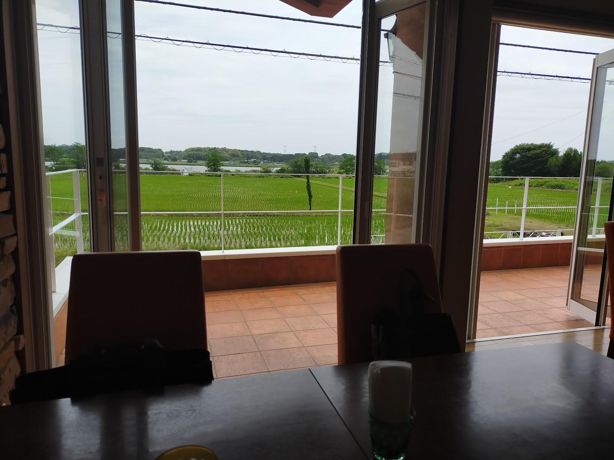
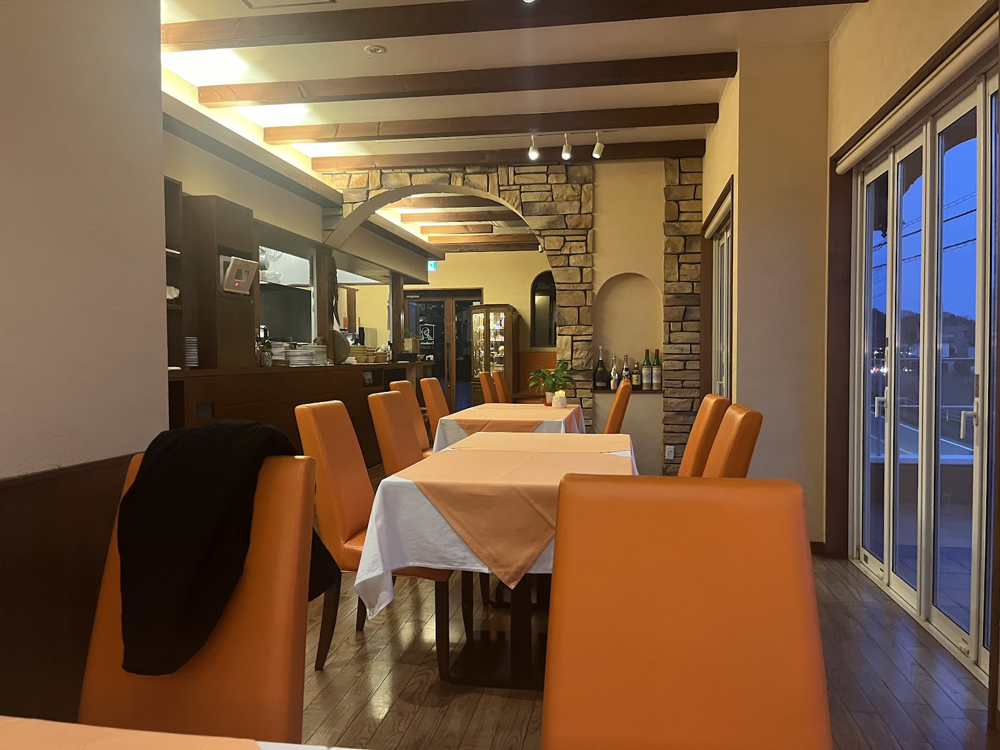

ギャラリー
石積みのアーチが広がる店内から、田園を望むテラス、彩り豊かなお料理まで。ジュリエッタの雰囲気をご覧ください。
Photo by mr. buono / Google マップ




実際の雰囲気を、ぜひ店内でお楽しみください。
電話でお問い合わせ石積みのアーチが広がる店内から、田園を望むテラス、彩り豊かなお料理まで。ジュリエッタの雰囲気をご覧ください。
Photo by mr. buono / Google マップ


実際の雰囲気を、ぜひ店内でお楽しみください。
電話でお問い合わせ